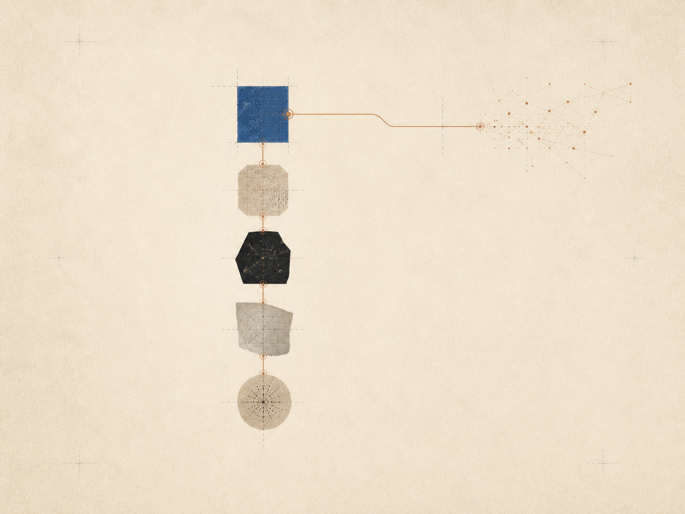

推出引导式回忆。
用足够的停顿回到值得保留的问题，让你先做出自己的尝试。

2026
用足够的停顿回到值得保留的问题，让你先做出自己的尝试。
关于哪些提示能让概念重新出现，同时不抹平它原有语境的新研究。
一组更轻巧的实践路径，帮助你开始主题、检验解释并建立知识地图。
主题、问题，以及它们之间有用的连接，会在你工作时保持可见。
记忆、解释、练习、知识地图和辅导五条研究线索，现在集中在一个研究页面。
从 API 密钥页面接入 Anthropic、OpenAI 或兼容服务，并在会话中使用它们。
没有找到匹配的动态。